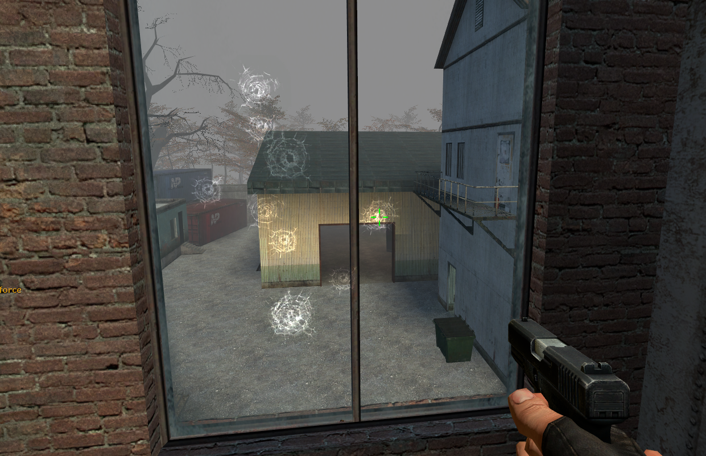

br_mill: The Limits of Source
br_mill is a battle royal map for Counter-Strike source. Using logic entities, there are dropping mechanics, zones, random guns etc...
It's been in development for about 1-2 years and is 90% complete (that last 10% is always the hardest). The age of the source engine has certainly limited development - it is really being pushed to its limit due to map size and the amount of lighting information, entities and geometry.


